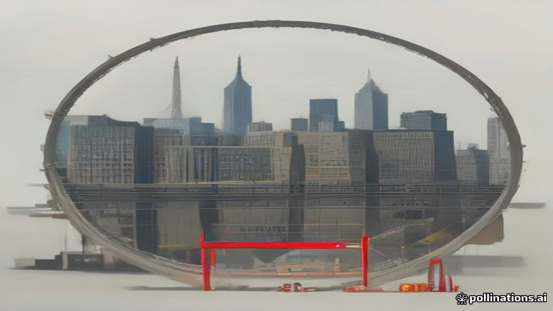

মার্কিন বিচারক দুই সপ্তাহের জন্য ট্রাম্পের 'আর্ক দে ট্রাম্প' নির্মাণে থামা আদেশ
Al Jazeera English, DW · 2026-11-06
AI-generated illustrationএকজন ফেডারেল বিচারক ১৪ দিনের নির্মাণ বন্ধের নির্দেশ দিয়েছেন, ৮-৪ ভোটে প্যানেল অনুমোদনের পর।
ওয়াশিংটন, ডি.সি.-তে 'আর্ক দে ট্রাম্প' নামে পরিচিত ট্রাম্পের বিজয়ী ধনুকের নির্মাণে একটি ফেডারেল বিচারক ১৪ দিনের সাময়িক বন্ধের আদেশ দিয়েছেন। এই আদেশে সাইটে সমস্ত নির্মাণ কাজ থামাতে বলা হয়েছে।
এই বিরতি পূর্বে একটি ফেডারেল প্যানেল ৮-৪ ভোটে প্রস্তাবটি অনুমোদন করার পর এসেছে। বিচারকের নিষেধাজ্ঞা আইনি চ্যালেঞ্জ বিবেচনা করা পর্যন্ত কাজ থামিয়ে রাখবে, আল জাজিরা ইংলিশ ও ডি ডব্লিউ রিপোর্ট করেছে। নির্মাণ কর্মীদের সাইটটি সুরক্ষিত করতে নির্দেশ দেওয়া হয়েছে।
Written by AI from facts reported by the outlets named above. It may contain errors; check the original reporting.English version
US Judge Orders Two-Week Halt to Trump's 'Arc de Trump' Construction in Washington
A U.S. federal judge issued an order that temporarily stops construction of the project known as the “Arc de Trump” in Washington, D.C. The order mandates a 14‑day suspension of all building activity on the site.
The pause follows an earlier decision by a federal review panel that had approved the president’s triumphal‑arch proposal by an 8‑4 vote. The judge’s injunction halts work while the legal challenges are considered, according to reports from Al Jazeera English and Deutsche Welle. Construction crews have been instructed to secure the site.